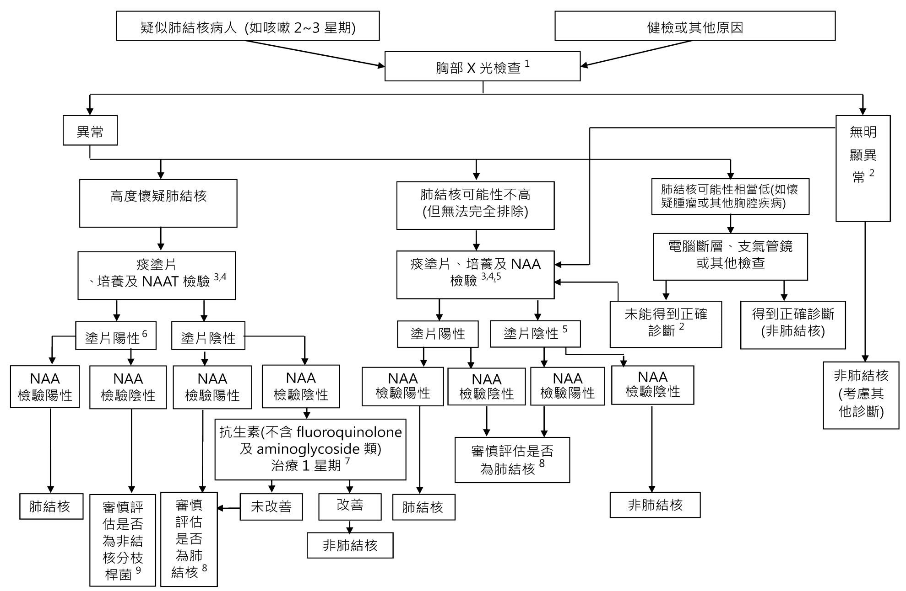
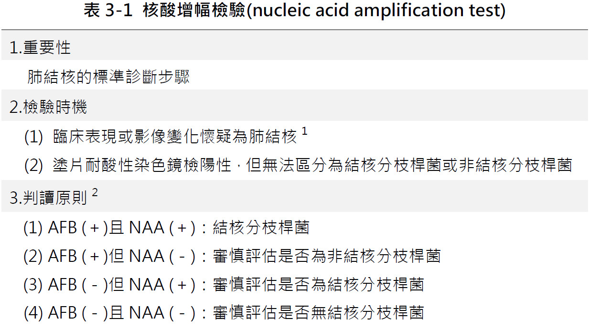
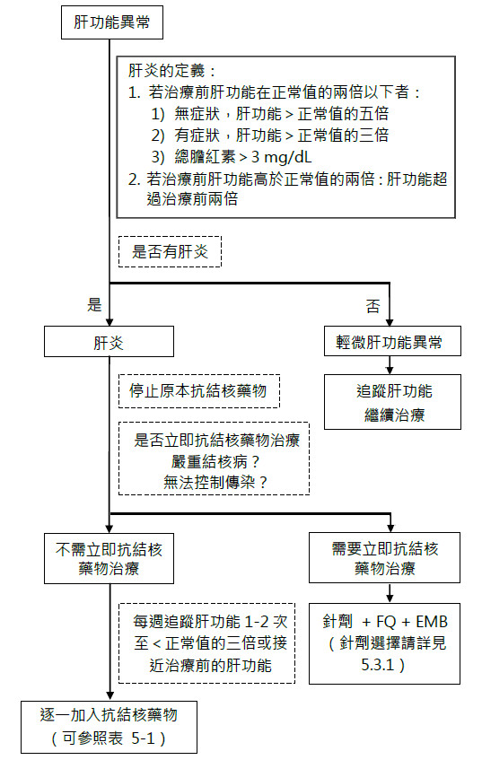
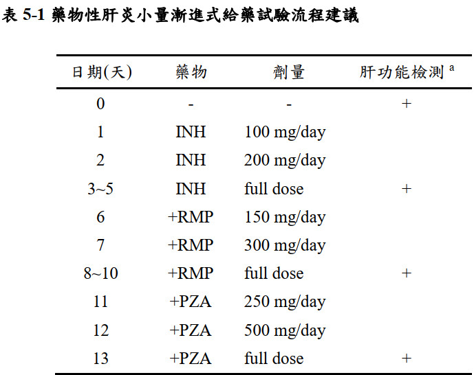
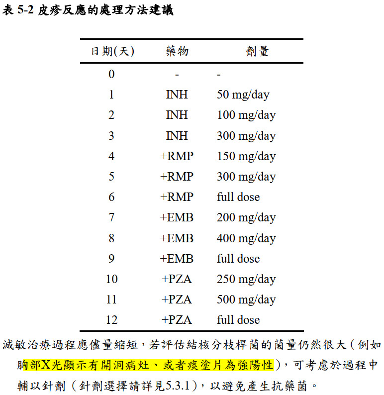
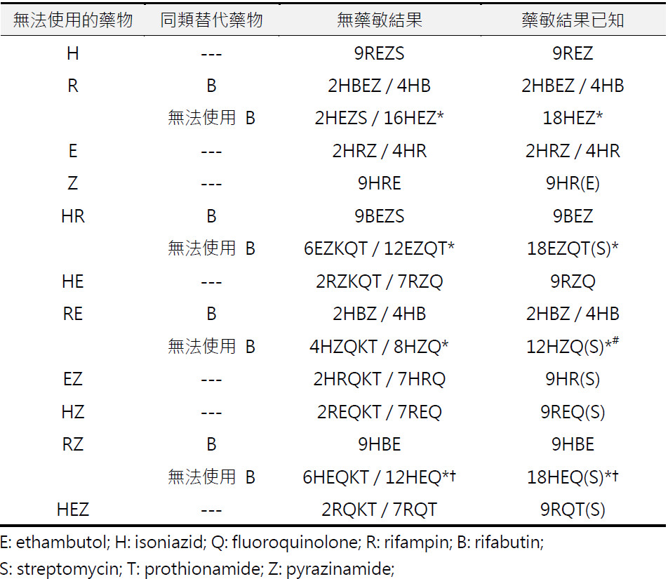

Tuberculosis¶
source: Pocket Medicine, 2022, 台灣肺結核診治指引第七版
Definitions¶
- Primary: new Mycobacterium tuberculosis (TB) in a naïve host; symptomatic or asymptomatic; 90% of infected normal hosts will never develop clinically evident disease
- Latent: well-controlled infection without clinical or radiographic evidence of active disease; can persist for years to decades
- Reactivated: activation of latent; more likely in the setting of immunosuppression.
- Milliary: disseminated lympho-hematogenous spread due to primary or reactivated TB
- Multidrug-resistant (MDR): resistant to isoniazid (INH) & rifampin. Can occur as 1° infxn.
- Extensively drug-resistant (XDR): resistant to INH, rifampin (RIF), fluoroquinolones (FQ), and at least one of amikacin, kanamycin, or capreomycin
Epidemiology (NEJM 2016;375:1081)¶
- Transmission via aerosols; untreated active dx requires airborne isolation in healthcare facilities and community isolation measures; must involve local public health authorities
- Acquisition: residents/travel in TB-endemic area, IVDU, resident/worker in correctional facility or homeless shelter, close contact w/ active TB
- Reactivation: risk is 5% in first 2 yr, 5-10% overall; ↑ if HIV ⊕, immunosupp. (anti-TNF, steroids), ESRD, DM, cancer, transplant, malnourished, smoker, substance use disorder
- 在盛行率低的已開發國家，如歐美各國，其結核病的發生大部分是內因性的（endogenous），即由舊的纖維化或鈣化病灶再活化而來；反之，在盛行率高的地區則由外在的感染而來
- 根據研究報告顯示，和一個開放性（傳染性）肺結核病人親密接觸的家人，大約有30%的機率會受到感染
- 初感染之後，一般人終其一生體內結核菌再度活化而發病（reactivation）的機率約為5~10％，其中約有一半是在感染後的前5年發病，而以第1年的危險性最大
Screening for latent TB¶
- Whom to screen: high likelihood of exposure and/or high risk of progression to active disease including HIV ⊕ and prior to immunosuppression (pre-transplant or anti-TNF)
- Relies on host immune system, so limited Se in immunosuppressed individuals
- Nb, testing for host exposure & immune response to TB, not whether TB active (vide infra)
- Screening tests
- IFN-γ release assays (IGRA): preferred test; Ag-stimulated IFN-γ release from Pt's T-cells. ↑ Sp over TST/PPD in BCG vaccinated Pts.
- Tuberculin skin test (TST/ PPD): inject purified protein intradermally, examine for wheal 48-72 hrs later. Interpret based on max diameter of induration, not erythema.
Clinical manifestations (Lancet 2016;387:1211)¶
- Constitutional symptoms are common in all manifestations, but may be absent
- Primary TB pneumonia: middle or lower lobe consolidation, ± effusion, ± cavitation
- 初感染變化群之一，或兩者都比較顯著，在臨床上可以診斷，例如肺門淋巴結腫脹，雙極性浸潤等
- 初感染原發病灶本身嚴重崩毀，發生支氣管內散播，形成滲透性很強的空洞性結核，叫作原發肺癆(primary pthisis)
- 淋巴結腫得很大，壓迫或破壞支氣管壁，造成肺塌陷，或阻塞性肺氣腫、或阻塞性肺炎、或經支氣管而散播至其他肺野，這種現象稱為上結核(epituberculosis)，胸部 X 光影像可見淋巴結腫大以及肺浸潤或類似大葉性肺炎的陰影。臨床上有時可見頸部淋巴結腫大
- 延續初次感染病灶，肺末梢部位小病灶有時會引發胸膜炎及胸腔積液
- 淋巴結病灶持續進展，結核分枝桿菌進入血流中而發生粟粒結核
- 同樣以血行性散播至肺外器官，如骨髓、肝、腎、脾及中樞神經系統，形成肺外結核
- TB pleurisy: pulmonary effusion ± pericardial and peritoneal effusions secondary to granuloma breakdown and local inflammation; can occur in primary or reactivation
- Reactivation TB pulmonary disease: upper lobe infiltrate ± volume loss ± cavitation
- CXR濃淡不一，邊緣不清楚，多發性，有空洞，肺尖部(S1, S2)或下肺葉的上肺段(S6)多
- Endobronchial TB: normal CXR
- Milliary TB: diffuse millet seed-sized lesions, more common in immunosupp.
- Lung, liver, spleen (80~100%) → kidney (60%), bone marrow (25~75%)
- Extrapulmonary TB: lymphadenitis, pericarditis, peritonitis, CNS disease including meningitis, GU tract disease ± sterile pyuria, osteoarticular disease (vertebral = Pott's disease), granulomatous hepatitis, splenitis, cutaneous disease, 單純之結核肋膜積液
- 喉頭結核、支氣管結核、腸結核是支氣管播散所致
- Intestine: terminal ileum & cecum最常見
- 在台灣，肺結核與肺外結核的比例是9:1
- TB and HIV: HIV ⊕ at ↑ risk infxn, reactivation (8-10%/yr without ART, higher w/ ↓ CD4), and progressive 1° infxn. CXR can be atypical espec. if CD4 ≤200 (JAMA 2005;293:2740).
Note
約 50%的肺外結核病人同時罹患肺結核
一個同時罹患肺結核與肺外結核之病人應歸類為肺結核個案
粟粒性結核有肺之病灶歸類為肺結核
一個同時罹患多部位肺外結核之病人其歸類以其最嚴重者為主
Diagnostics for active TB (CID 2017;64:11)¶

[^1] 必要時，包括胸部電腦斷層掃描檢查。
[^2] 醫師得視病情，決定是否進行痰塗片、NAA test 及培養。但若肺結核的可能性相當低，則不建議NAA test。
[^3] 痰塗片及培養，必須同時進行2~3 次。
[^4] 培養陽性檢體經鑑定為結核分枝桿菌，即可確診為肺結核。
[^5] 若肺結核的可能性相當低，不建議NAA test。
[^6] 塗片陽性，臨床醫師可直接下診斷為肺結核，但建議仍應進行NAA test。
[^7] 抗生素治療可在得知痰塗片陰性或痰檢驗的同時投予。
[^8] 依文中「核酸增幅檢驗的判讀」建議進行，並綜合病人臨床表現及培養結果，來確定是否為肺結核或其他診斷。
[^9] 依文中「核酸增幅檢驗的判讀」建議進行，並綜合病人臨床表現及培養結果，來確定是否為非結核分枝桿菌或其他診斷。
[^10] 若臨床醫師有疑義時，可與疾病管制署的轄區區管中心聯絡，並請安排專家提供協詢。
- Pulmonary TB: common CXR findings discussed above; induced sputum AFB smear & culture (3 samples at least 8 h apart) ± NAAT/ PCR (GeneXpert); consider bronchoscopy + BAL ± transbronchial biopsy. GeneXpert can also detect RIF resistance (non-bloody sputum only). Sp 98%/Se 74%, independent of HIV status.
- AFS塗片：每 mL 標本有 5000 至 10000 隻細菌方能檢測出
- 培養：每 mL 標本 10 至 100 隻細菌即可偵測到
- 傳統Lowenstein-Jensen 培養基或Middlebrook 7H10 或7H11 等固體培養基，需3-8星期才能培養出結核分枝桿菌；若培養陰性須等待8 星期才能發出陰性報告。
- 自動化液體培養基系統，陽性通常需時約2至4星期得知；若培養陰性須等待6 星期。
- 菌株鑑定的方式可以分子生物、抗原免疫檢測及MALDI-TOF質譜儀等方法進行。
- Lateral flow immunochromatographic test, ICT：偵測是否含有結核分枝桿菌分泌的特定MPB64抗原，可在15分鐘內完成試驗及判讀（菌量太少時可能會有偽陰性，須以其他方法輔助判定）。有些結核分枝桿菌群，例如：牛型結核分枝桿菌(Mycobacterium bovis )等，並不具有MPB64抗原；特定結核分枝桿菌如果在MPB64 基因發生變異，也有可能產生偽陰性。
- NAT：利用PCR可偵測臨床檢體之結核分枝桿菌約10-130隻細菌
- 塗片陽性：敏感度 92-100%，特異度>95%；塗片陰性但培養陽性：敏感度下降至 40-93%，但特異度仍維持在大於95%
- 若臨床表現或影像變化皆不像肺結核，不建議進行常規的 NAA 檢驗
- 塗片及 NAA 檢驗皆呈陽性，可推斷為罹患結核病
- 塗片呈現陽性，但是 NAA檢驗呈陰性：必須檢查是否因 PCR 反應中含有核酸複製的抑制物所致，若無抑制物的影響，則可推測病人之痰中存在有非結核分枝桿菌而非結核菌
- 塗片呈陰性，但 NAA 檢查呈陽性，則可依臨床綜合判斷或考慮再進行另一套檢體的 NAA 檢驗；如果仍得到陽性結果，則可推論此病人可能得到結核病
- 兩者皆為陰性，則表示痰中應無結核分枝桿菌存在

- GeneXpert：可在一般實驗室環境使用並在 2-3 小時即得到檢驗結果，在塗片陽性檢體，其敏感度達98%、特異度達99%；若檢體為塗片陰性，其敏感度下降至68%、特異度為99%
- 也可應用於 rifampin 抗藥之痰液檢測，其對於 rifampin 抗藥之敏感度為95%而特異度可達98%；惟當檢查對象的 rifampin 抗藥性低於5%時，其陽性預測值會降至70%以下，故仍需傳統藥物感受性試驗結果或其它分子檢測法再確認是否為 rifampin 抗藥
- Image:
- 活動性肺結核可見濃淡不均且邊緣不清楚的肺實質病變、壁較厚的空洞性病灶、支氣管性肺炎、粟粒狀病變、肋膜積水及與舊片比對有肺實質病灶之新變化。
- 但若屬肺結核痊癒後所遺留的陳舊性非活動性肺結核，則胸部X光影像，常見密集的硬結伴隨鈣化點，這些小硬結也常伴隨不同程度之纖維化結疤病灶，分佈於肺上葉；同時亦可見肋膜變厚。
- Timing of chest CT: 懷疑為活動性肺結核但胸部X光變化不明顯或多重抗藥性結核病是否存在空洞而必須考慮開刀
- Extrapulmonary TB
- Pleural/pericardial effusions or ascites: fluid sampling for AFB cx/smear, NAAT/ PCR, cell counts. Adenosine deaminase (ADA) can be ↑, best validated in ascites. Free INFγ can be elevated in pleural/ascitic fluid (not validated in pericardial effusions). Higher diagnostic yield with pleural/pericardial biopsies for disease at these sites.
- CSF: fluid sampling for AFB cx/smear (submit at least 10 mL), NAAT/PCR, cell count (lymphocyte predominanace), glucose (low), protein (high), ADA (high)
- Soft tissue: tissue biopsy with AFB staining, pathology w/ granulomas
Patient isolation¶
- Decision based on likelihood of active disease. Consider when cough, dyspnea, hemoptysis, ≥1 risk factor (HIV ⊕, foreign born, substance use disorder, homeless, recent incarceration, prior TB or exposure).
- Discontinue if alternative dx and AFB smear neg ×3, or TB treated for 2 wk & AFB neg ×3
Treatment of active tuberculosis (NEJM 2015;373:2149; Lancet 2016;387:1211)¶
- Prior to treatment, consult ID, check LFTs, Cr, HIV & hepatitis A/B/C screen, DM screen, pregnancy screen, vision testing for acuity and color, EtOH use history
- Treatment requires several drugs to prevent resistance (see below)
- Suspect MDRTB if prior TB Rx (esp. if poor adherence), travel to area w/ ↑ rates of MDR (India, China, Eastern Europe including Russia, South Africa), exposure to person w/ likely MDR-TB (NEJM 2008;359:636)
- “Paradoxical worsening” of sx can occur after starting Rx. More common w/ extrapulm. TB & more frequent/severe w/ concurrent immune reconstitution (eg, HIV ⊕ Pts started on ART, Pts taken off immunosuppression). Must r/oRx failure (repeat Cx, imaging), consider checking drug levels.
- Duration of treatment varies based on host, clinical manifestation, and improvement/progression on treatment
| Drug | Adverse Effects^ |
|---|---|
| Isoniazid (INH) | Hepatitis (avoid EtOH), periph neuropathy (↓ risk by suppl. vit B6), drug-induced lupus |
| Rifampin (RIF) | Orange tint of body fluids, GI upset, hepatitis (avoid EtOH), hypersensitivity, fever, drug interactions |
| Pyrazinamide (PZA) | Hepatitis (avoid EtOH), hyperuricemia, arthritis |
| Ethambutol (EMB) | Optic neuritis |
| Streptomycin (SM) | Ototoxicity, nephrotoxicity |
| Amikacin (AMK) | Ototoxicity, nephrotoxicity |
| Quinolone (moxifloxacin, levofloxacin) | GI upset, tendinopathy, ↑ QTc |
| ^Risk of hepatitis ↑ w/ pre-existing liver disease. Consult ID, consider holding/replacing PZA or INH. |
標準的結核治療處方
INH + RMP + PZA + EMB x 60天 → INH + RMP + EMB x 120天
- INH 和RMP 都敏感者，可考慮停用EMB
- 對於胸部X 光有廣泛的結核侵犯或是開洞病灶，或者是第二個月痰培養仍為陽性，以及加強期沒有全程使用PZA 的病人，應該將持續期延長為7 個月
肺外結核的治療期間¶
| 部位 | 治療期間(月) | 類固醇 |
|---|---|---|
| 粒粒性結核 | 6-9* | |
| 結核性淋巴腺炎 | 6-9* | |
| 結核性肋膜炎 | 6-9* | |
| 生殖泌尿道結核 | 6-9* | |
| 骨結核 | 9-12 | 強烈建議 |
| 中樞神經系統結核 | 12-18 | 強烈建議 |
| 腹部結核 | 6-9* | 部分建議 |
| 結核性心包膜炎 | 6-9* | 強烈建議 |
| [^*] 早期有加用兩個月的PZA則可採六個月的療程，如果無法使用PZA則療程為九個月；主治醫師亦可視病人的臨床狀況延長治療。 |
第一線處方藥物¶
Isoniazid¶
- 干擾結核分枝桿菌mycolic acid合成，抑制細胞壁的合成 → 對快速增殖的結核分枝桿菌特別有效，早期殺菌力強，但滅菌能力 (sterilizing activity) 次於RMP和PZA
- 抗藥性基因：katG, *inhA* mutations (3.5x10^-6)
- inhA突變引起的抗藥通常是低濃度抗藥，一般劑量 300mg INH所達到的血中濃度遠超過 inhA 抗藥菌種的最低抑菌濃度。如果病人治療反應良好，移除INH會弱化治療方案
- katG突變引起的抗藥通常是高濃度抗藥，需要較高劑量的INH
- AE: hepatitis,
peripheral neuropathy, rash, drug fever, - Pyridoxine (vitamin B6, 50 mg)：糖尿病、腎功能不全、營養不良、慢性肝病、酗酒、感染HIV、末梢神經炎、懷孕、哺乳、使用 cycloserine或高劑量 isoniazid (16-20 mg/kg/day) 治療
Rifampicin¶
- 抑制結核分枝桿菌RNA-polymerase的活性，對吞噬細胞具良好的穿透力，能穿透許多組織且達到相當高濃度，早期殺菌力次於INH，但有極好的滅菌力 (sterilizing activity)
- 抗藥性基因：
*rpoB* mutation (1.2x10^-8) - AE: hepatitis,
orange-colored urine, rash,thrombocytopenia, hemolytic anemia, AKI, 類流感症狀, drug fever - 會降低口服避孕藥濃度
Pyrazinamide¶
- Nicotinamide analogs, may inhibit the fatty acid synthetase I enzyme of M. tuberculosis，對巨噬細胞內酸性環境中生長緩慢的結核分枝桿菌最具殺菌力，在治療的前兩個月使用時效果最佳；約30%經由肝臟代謝，以pyrazinoic acid由尿液排出，會影響尿素(renal urate)的排除，造成高尿酸血症
- 抗藥性基因：pncA mutation (1.0x10^-5)
- AE: hepatitis，痛風，腸胃不適（一線藥物中最常見），血糖升高
- 卡介苗菌株對pyrazinamide有抗藥性
Ethambutol¶
- 抑制結核分枝桿菌細胞壁的合成；一般劑量雖僅有抑菌能力，較高劑量時early bactericidal activity不亞於rifampicin；當有原發性INH抗藥存在時，合併使用EMB可能可以減少產生RMP抗藥菌株；CNS穿透力差
- 抗藥性基因：embA, embB (3.1x10^-5)
- AE: retrobulbar neuritis (esp. CKD) with 視力模糊、中央盲點及紅綠色盲，腸胃不適
- 不可與制酸劑 (antacids) 一起使用
Rifabutin¶
- rifamycin 的一種衍生物，但RFB 在不影響核糖核酸(RNA) 或蛋白質合成的情形下能抑制胸腺嘧啶攝入至細菌的去氧核糖核酸(DNA)內，其作用機轉與RMP 不完全相同
- 雖然它在肝內發生代謝作用，但對肝功能異常的病人仍能應用，不會加重INH 對肝的毒性
- 常見的副作用和RMP 類似，有皮疹/搔癢、腸胃不適、關節痛、肝毒性；高劑量RFB 或與clarithromycin、fluconazole 或protease inhibitors 併用時，易造成單側或雙側眼葡萄膜炎(uveitis, 8%)，若立即停藥，可緩解
- 比RMP 容易引起嚴重的白血球低下症（leukopenia，2%），且和RMP出現交叉抗藥的可能性極高（cross resistance，臺灣的數據為87%），建議只用在下列幾種情形：
- 使用蛋白酶抑制劑、非核苷反錄酶抑制劑的HIV 陽性病人
- 若病人使用口服抗凝血劑，不論是warfarin 或是新一代口服抗凝血劑(novel oral anti-coagulant, NOAC)，使用RMP 均會影響其功能，相較於RMP，rifabutin 對抗凝血劑的代謝影響程度比較低，可考慮以rifabutin 取代，並持續觀察臨床反 應，也應提醒病人和開立抗凝血劑的醫師，注意血栓和出血的風險。
- 病人發生RMP 的副作用，且測試後確認 rifabutin 可以避免這個副作用
- 細菌對RMP 抗藥，且DST 證實rifabutin 對它有效
治療反應評估及結果¶
- 痰檢查：
- 至少在治療約兩個月、五個月以及完治時收集兩套痰追蹤檢查塗片耐酸性染色及分枝桿菌培養
- 對於治療前胸部X光顯示有開洞病灶、且治療兩個月後仍持續陽性的病人應該考慮將整個結核病治療的療程延長至少三個月（總共九個月以上）
- 對於痰塗片或培養陽性的病人，建議每月追蹤驗痰直至陰轉為止
-
胸部X光檢查：
- 非多重抗藥結核病的病人， 治療前、治療後1~2個月、及完治時，建議追蹤胸部Ⅹ光
- 多重抗藥病人則建議每三個月追蹤胸部Ⅹ光，特別是加強期，以作為藥物治療反應的參考。但應避免只根據胸部X光就冒然決定停藥
-
治療滿二個月，痰塗片仍然陽性的病人：
- 如果病人的症狀改善，痰塗片的價數逐漸減低，或是痰培養由送檢到回報陽性的時間隨著治療而延長，那可能是Nonviable bacteria (NVB)，痰培養會是陰性的，可以維持當下的處方，延長PZA 的治療時程，並持續追蹤病人的症狀、胸部X 光和痰塗片及培養。必要時可以縮短追蹤的間隔，也可以將痰送疾病管制署，進行INH 和RMP 的基因檢測，了解是否有抗藥菌株的產生。
-
結核治療的過程中，也可能培養出非結核分枝桿菌，NAA test 雖然能用來分辦結核菌和非結核分枝桿菌，但是NAA test 陽性，也可能是NVB，使得決策更複雜。如果病人的病情穩定，可以靜待培養和菌株鑑定的結果。
-
加強期結束時，如果病人的的治療反應不如預期：臨床症狀和肺部病灶影像學變化沒有改善，或是痰液培養仍為陽性。需考慮病人這時身上的細菌，可能已產生新的抗藥，不能只依據先前的DST 結果來設計處方，只加入一種新藥物企圖補強目前的處方是常見的錯誤，這麼做並不足以建立一個有效的處方，反而使新加入的藥物也曝露在產生新抗藥的風險中，使未來治療的處方設計更困難。應將病人的痰檢體送驗RMP 的抗藥基因，在最短的時間內排除rifampicin 抗藥的可能性，如果要加入新的藥物來補強處方，通常需同時加入3 種預期有感受性且過去未使用過的藥物，在更動處方前，建議提出病例審查與專家討論。
-
治癒 (Cured)：細菌學確診之結核個案於治療過程中==至少一次痰培養陰性且最後一個月之治療時痰培養陰性==
- 完治 (Treatment completed)：病人已完成治療但其痰檢驗無法歸類為治癒或治療失敗
- 開始治療時痰塗片陽性的病人，在治療過程中至少1次痰塗片陰性且最後1個月痰塗片陰性。塗片無法陰轉的病人必須證明是非結核分枝桿菌或死菌
- 開始治療時痰培養陽性的病人，在治療過程中至少 1 次痰培養陰性。培養無法陰轉的病人必須鑑定是非結核分枝桿菌
- 治療全程痰塗片培養都陰性的病人，在治療過程中胸部Ⅹ光進步或穩定
- 完成治療後的監測：目前的證據顯示，完成治療後的結核病人，比一般人有更高的機會再得結核病。完治後的第一年建議每半年追蹤一次，此後每年追蹤一次。追蹤時，建議安排胸部Ⅹ光檢查，若有呼吸道症狀，也應考慮驗痰。
- 治療成功 (Treatment success)：治癒+完治
- 治療失敗：治療滿四個月後痰培養仍然陽性，或是治療前痰培養陰性，但在治療二個月後培養變為陽性
副作用¶
- 結核病人在治療前以及開始治療後的第2、4、8週，應考慮安排CBC/DC, BUN/Cr, AST/ALT/bil-T, uric acid等
- 使用EMB者==每月==檢查視力及辨色力，若病人有較高的風險發生視神經炎，在確定為藥物全敏感之結核病後，可考慮停止使用EMB
- 使用aminoglycoside或polypeptide類藥物的結核病人宜注意追蹤聽力及平衡能力
- 病人若有以下任何一種情況，宜考慮在不良反應尚未緩解之前選擇其他抗結核藥物治療：
- 結核病情嚴重，可能危及生命或造成無法復原之傷害，例如結核病併發成人呼吸窘迫症、結核性腦膜炎等
- 病人具有高傳染力且無法適當隔離
肝炎¶
- 台灣結核病人的年齡層偏高，同時病毒性肝炎盛行，再加上較多的N-acetyltransferase 2的slowacetylator，因此產生肝炎的機會高於大部分結核病盛行地區
- 停藥條件：有肝炎症狀而AST/ALT超過正常上限的三倍；或無肝炎症狀但AST/ALT超過正常上限的==五倍==
- 若肝炎發生時，臨床判斷必須繼續抗結核藥物治療，考慮以一種針劑、EMB、加上一種FQ 類藥物治療
- 由於FQ 類藥物也可能造成肝炎，因此治療過程中仍須持續追蹤肝功能
- 如果暫時沒有必要繼續抗結核藥物治療，建議等待肝功能恢復或下降至正常上限的三倍以下後，依INH→RMP→PZA 順序，再重新進行漸進式給藥試驗，逐一加入其他一線藥物
- 在所有第一線抗結核藥物當中，INH具有最高的早期殺菌力，可以迅速減少病人體內結核分枝桿菌量，改善臨床症狀及降低傳染力
- 逐一加藥時，由於使用的藥物種類往往不足，因此最先使用的藥物，最有可能產生抗藥性。基於保護RMP，優先加入INH
- 逐一加藥的過程中，可以同時使用足夠劑量的EMB。俟成功加上足夠有效藥物後，可以停止針劑
- 若病人之藥物性肝炎嚴重或合併有黃疸，在成功地重新使用上INH 及RMP之後，不建議嘗試加入PZA


尿酸¶
- Creatinine上升超過0.5mg/dL
- 嚴重無法緩解之痛風症狀、或已經攝取足夠水分且接受低普林飲食之後血清尿酸值仍高於13 mg/dL、或高尿酸血症併急性腎功能惡化→停用PZA
- 不建議使用allopurinol（與PZA 有藥物交互作用），可考慮採用降尿酸藥benzbromarone
皮疹¶
- 嚴重無法緩解之皮疹、搔癢、或併發toxic epidermal necrolysis, Stevens-Johnson syndrome
- INH-RMP-EMB→PZA de-sensitization

- INH-RMP-EMB→PZA de-sensitization
腸胃不適¶
- 第一線藥物中，PZA 是最常引起腸胃不適的藥物。另外，飯前服用INH 與RMP，血中藥物濃度會比飯後服用稍高，但腸胃道的不良反應也因此而顯著提高。
- 處理方式：兩週內會自行減緩或消失，症狀較嚴重者，可以建議病人飯後或與食物一起服用，或在睡前給藥。但若症狀嚴重，應立即停止所有抗結核藥物，待症狀改善後，依照INH→RMP→EMB→PZA 的順序逐一加入足夠之抗結核藥物。
視神經炎¶
- 視力降低、紅綠色盲（dyschromatopsia）、中央盲點（central scotoma），通常兩眼一起發生
- 由於臺灣地區結核病人的年齡層偏高，有較多的病人同時罹患糖尿病或腎臟疾病，視神經炎的機會同樣高於大部分結核病盛行地區，且較可能產生無法恢復的視力傷害
- EMB 是最常見造成視神經炎的藥物，在建議的劑量下（15–20mg/kg），視神經炎發生機率大約介於1–2%，永久視力缺損的發生率則小於1%
- 其他抗結核藥物包括INH、rifabutin、ethionamide、以及clofazimine、linezolid 等等，也都被報告有視力傷害的可能
- 發生嚴重的視力傷害時，應立即停止可能產生視神經毒性的藥物，包括上列所有藥物；唯此時應特別注意處方是否有藥物種類不足的問題
- 輕微的視力模糊時，可以先停止EMB，之後密切觀察，照會眼科醫師
骨髓抑制¶
- 嚴重之貧血、血小板下降、紫斑、白血球低下、或甚至泛血球寡少症
- 最常見的引發藥物為 rifabutin和RMP
- INH也會產生hemolytic anemia, agranulocytosis
- EMB和PZA也有導致貧血的報告
- 當病人發生嚴重的血球細胞減少時，應立即停止所有抗結核藥物，待血球恢復後，依 INH→EMB→PZA 的順序，進行漸進式給藥試驗，逐一加入其他一線藥物
腎功能惡化¶
- 高尿酸造成crystal uropathy
- RMP 導致interstitial nephritis
- 其他身體狀況改變導致急性腎損傷
- 一旦發現腎功能惡化，除了停止抗結核藥物治療以外，也應該安排進一步檢查或照會腎臟科醫師鑑別診斷。之後待腎功能恢復或穩定後，再逐一上藥
產生不良反應之後處理調整的建議¶
